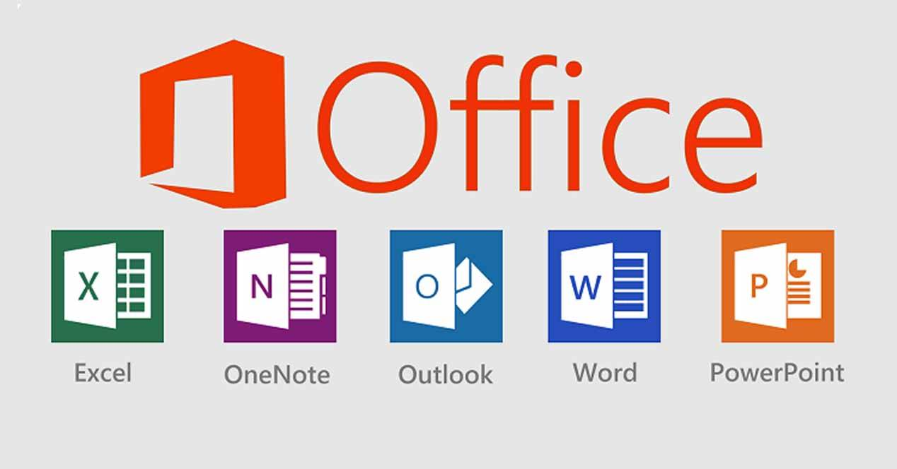

| 1. DIGITACIÓN: |
|
| Elaboración de documentos con rapidez y precisión. |
| 2. PROGRAMAS DE OFICINAS: |
 |
| Elaboración de documentos de uso común en una oficina, utilizando eficientemente los programas Ms. Word, Excel, Power Point y Publisher. |
| 3. ELABORACIÓN DE PRODUCTOS PUBLICITARIOS: |
 |
| Creación de gigantografías, almanaques, afiches, etc. con ayuda de los programas Photoshop y Corel Draw. |
| 4. HERRAMIENTAS DIGITALES PARA EL TELETRABAJO: |
 |
| Utilizar eficaz y eficiente los recursos tecnológicos para la búsqueda de empleo y/o autoempleo. |
| 5. DISEÑO DE PÁGINAS WEB: |
 |
| Utilizar eficaz y eficiente los programas para páginas web. |